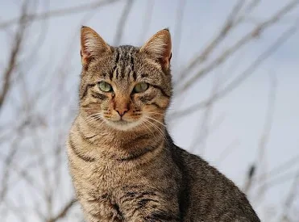
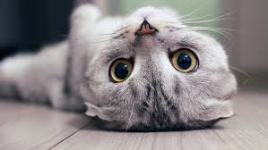

The domestic cat (Felis catus) is a small, agile, carnivorous mammal that holds the distinction of being the only domesticated species in the Felidae family. Though highly valued worldwide for companionship and pest control, cats are obligate carnivores and retain many of the physical and behavioral traits of their wild ancestors, such as the African wildcat. Key features include a flexible body, quick reflexes, sharp retractable claws, and highly developed senses, particularly keen night vision and hearing. Cats are solitary hunters but socially interact with humans and sometimes form loose colonies of related females in feral conditions. Their communication is a complex mix of vocalizations—including meowing, purring, and hissing—and intricate body language, all of which contribute to their unique and often endearing relationship with people.

